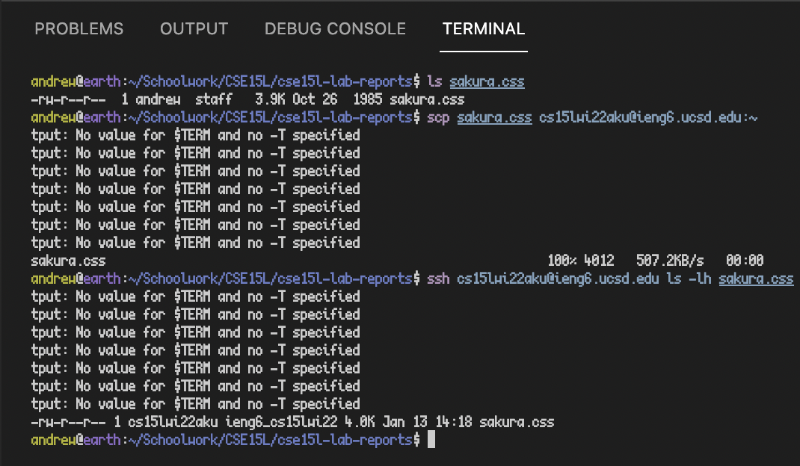
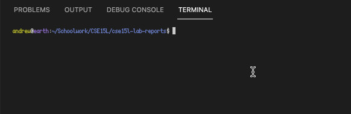

Lab Report 1: Remote Access
January 14, 2022
Step 1: Installing VS Code
Step 1a: Downloading VS Code
- If
homebrew is installed (if you don't know what this is, ignore this):
$ brew install --cask visual-studio-code
Step 1b: Opening VS Code
- Open VS Code from Launchpad (MacOS), the Start Menu (Windows), or the installation directory (Linux)
Screenshot:
Step 2: Remotely Connecting
$ ssh cs15lwi22ABC@ieng6.ucsd.edu [commands here]
For examples of available commands, see Step 3.
Step 3: Trying Some Commands
- A command is any program accessible via the shell. A shell is a specific kind of program that allows users to interface with a computer. You are now remotely connected to a shell running on a UCSD server.
- To run any of the following commands, type them into the VS Code terminal session which is currently
ssh'd into the remote server. Any text in [brackets] are optional arguments, and can either be omitted or filled in with the specified information.
- Note that the
$ refers to the shell's prompt, and the actual command to be typed is what follows.
| Command |
Description |
$ cd [some directory]
|
Changes the current working directory of the shell |
$ ls [-alh]
|
Lists the contents of the current working directory |
$ cat [some file]
|
Prints the contents of the given file |
$ cp [from] [to] [-r]
|
Copies the file/folder in from to the destination at to, overwriting if the destination already exists (-r is required if copying a folder) |
$ exit
|
Ends the current shell session (disconnecting from the remote server) |
$ man [command]
|
Print information about how to use the given command |
$ scp [file] [remote destination]
|
Copy the given file to the given remote destination: See Step 4 |
- Screenshot:
Step 4: Moving Files with scp
- To copy a file from your local machine to the remote machine, use the
scp command.
- The basic form is as follows:
$ scp [filename] cs15lwi22ABC@ieng6.ucsd.edu:[path]
-
[filename] is the name of the file to be copied from your local machine
-
[path] is the path on the remote server into which the file should be copied
- To copy to your home directory, type
~
- To copy to any directory or file path within your home directory, type a path of the form
~/a/b/c
- The command will prompt you for your password, then report progress as it copies the file over.
Screenshot:

Step 5: Setting an SSH Key
- In order to avoid entering your password every time you connect, you can set up an SSH key.
- In place of entering your password,
ssh will perform mathematical computations to determine whether the private key on your machine combines with the server's public key in the way it expects (and whether to allow you to log in).
Step 5a: Generate a New Key Pair
- In a new terminal session, run the command:
$ ssh-keygen
After pressing enter to every prompt, it should produce output similar to:
Step 5b: Copy the Public Key
- Now that the key pair has been generated, the public key must be copied to the remote server.
- To do this, execute the following command (and enter your password when prompted):
$ scp ~/.ssh/id_rsa.pub cs15lwi22ABC@ieng6.ucsd.edu:~/.ssh/authorized_keys
- Note: This assumes a Unix-like (i.e. MacOS/Linux) environment, this command will fail on Windows
Step 5c: Logging In
- Now that the appropriate files have been created and copied, execute:
$ ssh cs15lwi22ABC@ieng6.ucsd.edu
If everything worked properly, you should no longer be prompted for your password.
Screenshot:
Step 6: Optimizing Remote Running
- In no particular order, here are a variety of helpful tips (and GIFs) for navigating the shell more efficiently:
- Tab autocompletes whatever you are typing (e.g. filenames, commands, paths, etc.)
- Up/Down Arrow navigate through your command history

- Ctrl+A and Ctrl+E navigate to the start/end of the line respectively
- Ctrl+Left/Right Arrow move the cursor left/right by one word